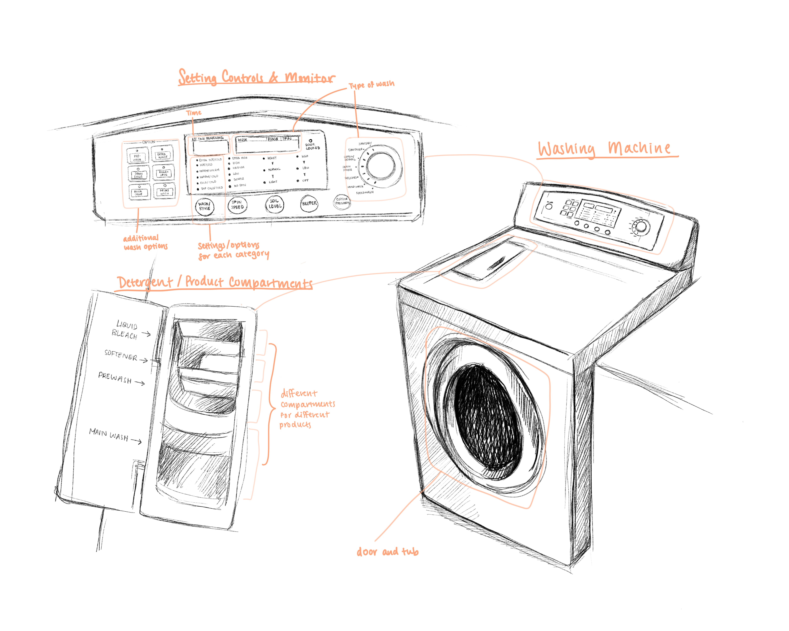

The Washing Machine
User Research and Personas
Context
This project is focused upon conducting research and analysis of users to empathize and understand their perspectives and issues. I was tasked with selecting an interface and conducting user interviews and observations of that interface. From there, using my research, I was to develop user personas and a storyboard for one of the personas in order to gain insight into the emotions and painpoints involved in the user’s interaction.
The interface I chose to focus on was the washing machine.
The washing machine’s goal is to wash a load of clothes. The key components of the interface are the tub and door, the settings control, and a detergent valve. It is important to note, however, that the interfaces varied among users--only one had the detergent valve.
User Research
To understand the experiences and emotions felt while interacting with a washing machine, I conducted user interviews and observations. One was in-person, and the other two were done through Zoom and Facetime.
In order to gain insight into the variety of users who interact with washing machines, I conducted research with three individuals:
- A married mother of two with a full-time job,
- A college sophomore studying remotely and living at home,
- And a college freshman currently living at school in a dorm.
With these three users, I am able to diversify and expand the scope of my research, understanding how each specific user interacts differently with the interface.
Observations and Key Takeaways
All three users didn’t use all controls for washing machine settings. The mother used the temperature, spin speed, and type of wash controls (hand-wash, cottons, etc.), while both college students only changed speed and temperature.
The users would categorize and separate their clothes before washing. The mother used more categories, with lights, darks, and delicates. The remote college student separated into towels and all other clothes, and the on-campus student combined undergarments and towels in one load and all other clothes in the other.
The mother didn’t calculate the time when her cycle would finish. The machine let out a beep instead, alerting her to when it was finished. The remote student had a timer on her phone, but when it went off she snoozed it for around 15 minutes before switching. The on-campus student used a laundry app which had the cycle duration and machine availability information on, and she would check it a couple times while waiting. Right when her cycle finished, she went to switch it out.
Interviews
Describe the steps you take in your laundry day process.
What objects or products are involved in your process?
How often do you use the washing machine?
How many loads of clothes do you wash?
How do you decide which clothes are in each load?
What settings do you use on the washing machine?
Reflecting on your process, what would you change about it if you could?
Mother
The mother usually deals with all the laundry in the house once a week, and separates into three loads. She has a complicated control interface, but only uses temp, speed, and type of wash. She also uses detergent, bleach for light, and softener for winter clothes. The mother doesn’t keep track of time, instead using the machine’s timer alarm. She desires some way to make the folding of washed and dried clothes easier.
Remote Student
The remote student does her own laundry once a week and typically does two loads: clothes and towels. A majority of her clothes are athleisure. She uses the delicates option for clothes and Towels for towels. She also uses a cup of liquid detergent per load. The student dislikes how heavy her hamper as it causes her back pain, and says often she will forget that her clothes are in the wash, resulting in them smelling “funky.”
On-Campus Student
Once a week, the on-campus student will do laundry. She does two loads: undergarments and towels, and normal clothes. She washes the first on gentle/cold, and the rest on hot/normal. She will use two tide pods, one per load. She also uses a laundry app. The student dislikes having two loads: she has to make multiple trips to the laundry room. Also, if she doesn’t hurry people will take out her clothes and put them on the floor.
User Personas
After my research, I consolidated my findings into two user personas to better emphasize with the users.
Joy represents the family-oriented, working user, with a washing machine in her house. Washing clothes is just one of the many tasks she juggles while also working and taking care of her children. She often does two or three loads, so washing clothes for her usually takes a long time: at minimum, a couple of hours. Joy dislikes how heavy the wet clothes are when moving them from the washing machine to the dryer, and also how long the process is to complete her washing.
Rachel is the more inexperienced, college student using a laundry machine in her dorm. She doesn’t have a set time to wash her clothes besides on Sundays, so she has to constantly check the laundry app to see if there is a machine available and rush down when there is. The laundry room is in the basement, so she has to walk down a couple flights of stairs to reach it. In addition, she has to make multiple trips because she has different loads. She also has to worry about fellow students taking her wet clothes out and leaving them on the floor. Her issues are with how long and tedious the process is, not having a set time to wash, and having to rush before an open machine is taken or her clothes get taken out.
User Journey
Based on Rachel, I created a storyboard of her washing machine experience to highlight and gain insight into her process and the issues she has with it. One thing I noticed while creating the storyboard was the repetition of the steps: she makes many trips to the laundry room in the basement while carrying a hamper of clothes. The other issue I focused on was the rush and stress she feels making her way to the laundry room.
Reflection
Between the interviews and observations, I noticed that the observations showed a lot of small details that the interviews didn’t get the chance to show. For example, the remote college student using her iPhone alarm to notify the end of a cycle. Yet, the interviews revealed the motives, emotions, and thoughts of the users much clearer than the observations.
I also noticed that my user personas were heavily centered on emotions felt by my users, and the storyboard more on the experience and how that causes those emotions. Going through the entire storyboarding process really struck home how tedious and repetitive the washing clothes process was as well, as the mirrored panels reflected repeated steps.
Overall, this project showed me the value of how user personas and storyboarding: they allow us to take the data from user research and use it to gain a deep sense of understanding and empathy with the user.